Chat
Respuestas con fuentes
El chat no se limita a responder: enumera los archivos que ha usado y los pasajes citados con la página. Desde ahí abres el PDF, o marcas documentos para seguir trabajando solo con esos.
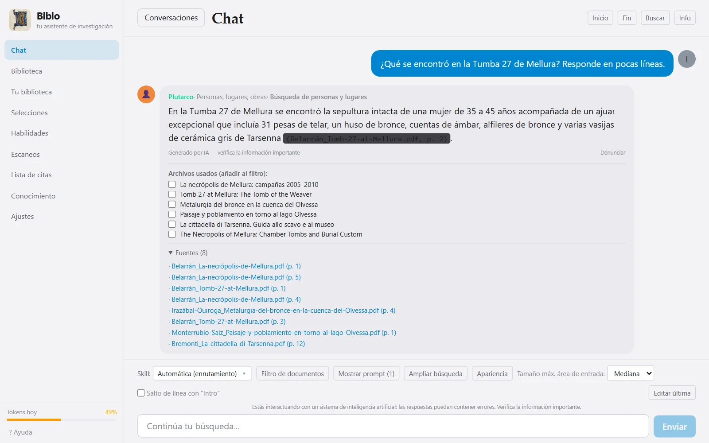
¿Te dedicas a la investigación y aún no sabes cómo usar la IA en tu trabajo?
Conecta una vez tus carpetas de PDF y Biblo los lee todos: en cada pregunta busca por sí solo en toda tu biblioteca, y bajo cada respuesta te muestra el documento y la página. La IA te acompaña, el trabajo y el criterio siguen siendo tuyos.
Gratis · Windows 10 y 11 de 64 bits · Mac con chip de Apple, macOS 15 o posterior
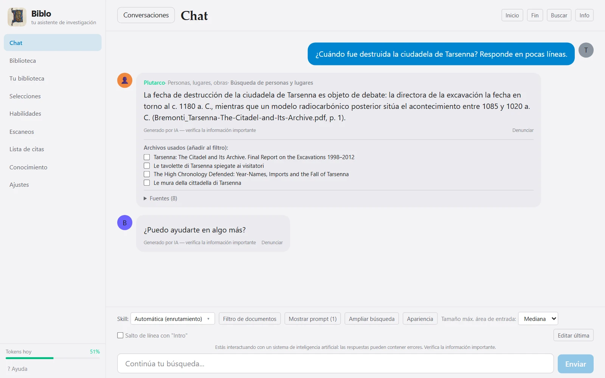
El trabajo que más tiempo se lleva en una investigación, hecho sobre tus propios documentos y con las fuentes siempre a la vista.
No tienes que subir archivos al chat ni elegir cada vez sobre qué documentos trabajar: Biblo ya ha leído todo lo que has conectado y, en cada pregunta, busca por sí solo los pasajes necesarios en toda la biblioteca. Así se convierte en un asistente construido en torno a tu trabajo y a lo que intentas sacar adelante. Y si quieres centrarte en unos pocos textos, una selección acota el campo.
Haz preguntas en lenguaje natural a tus PDF: la respuesta llega con los pasajes citados, documento y página.
Describe un tema y Biblo te dice qué volúmenes hablan realmente de él, por orden de pertinencia.
Resumir un volumen, analizar una argumentación, comparar dos textos: cada tarea tiene su asistente especializado.
Biblo crea las fichas de autores, obras y figuras y conecta tus documentos entre sí, para que veas dónde se cruzan.
Un índice único de todo lo que citan tus textos (obras, autores, figuras) con las veces que aparece cada uno.
Los PDF sin texto, como los volúmenes escaneados, se leen con OCR y se pueden consultar como los demás.
Biblo no escribe la investigación por ti: lee, busca y ordena las fuentes. Cada respuesta se puede comprobar en el texto, y si la respuesta no está en tus documentos, te lo dice. Las preguntas, las decisiones y las conclusiones siguen siendo tuyas.
Biblo no cuesta nada y no tiene suscripción. Para la IA usa tu propia clave personal de Google Gemini, también gratuita: se crea en un minuto y la app te enseña cómo. Las peticiones salen de tu cuenta, tus archivos se quedan en tu ordenador (a Google solo le llega el pasaje necesario para cada respuesta) y puedes revocar la clave cuando quieras.
Cuando tienes cientos de volúmenes, el problema ya no es encontrar un término: es recordar en qué libro se hablaba de él, y cómo. Biblo sostiene las dos puntas — busca el sentido en vez de las letras y te devuelve el pasaje exacto del que sale lo que afirma.
Pregunta «cómo se justificaba el consenso» y encuentra los pasajes que hablan de ello, aunque esas palabras no aparezcan.
Bajo cada respuesta están los archivos usados y los pasajes citados con el número de página. Un clic abre el PDF en el punto exacto.
Si la respuesta no está en tus documentos, te lo dice en vez de inventársela.
Después la biblioteca queda lista: solo se actualiza cuando añades documentos nuevos.
Le indicas a Biblo dónde están los PDF. Se quedan donde están: sin subidas, sin copias en la nube, sin carpetas que reorganizar.
Tres fases separadas y repetibles. Leer prepara el texto para la búsqueda. Inspeccionar construye las fichas de autores, obras y figuras. Buscar conexiones relaciona los documentos entre sí.
Escribes la pregunta en el chat. Biblo elige el asistente adecuado, busca en los textos, selecciona los pasajes y responde citándolos.
Cada pantalla de abajo es la aplicación real, no una maqueta.
El chat no se limita a responder: enumera los archivos que ha usado y los pasajes citados con la página. Desde ahí abres el PDF, o marcas documentos para seguir trabajando solo con esos.

Resumir un volumen, comparar dos textos, encontrar un pasaje, analizar una argumentación: cada tarea tiene su asistente y su forma de leer. Biblo elige solo el que conviene a la pregunta — o lo eliges tú.
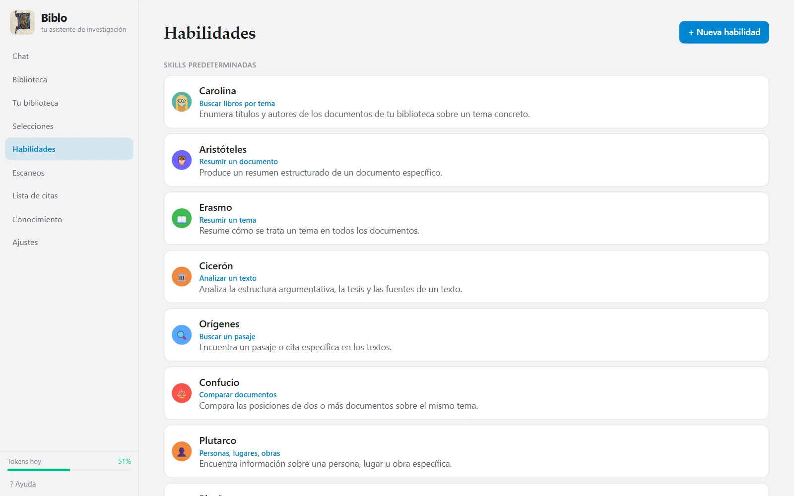
De un vistazo: cuántos documentos se han leído, cuántos inspeccionado, cuántos conectado. Las tres fases están separadas a propósito, para leerlo todo ya y profundizar con calma.
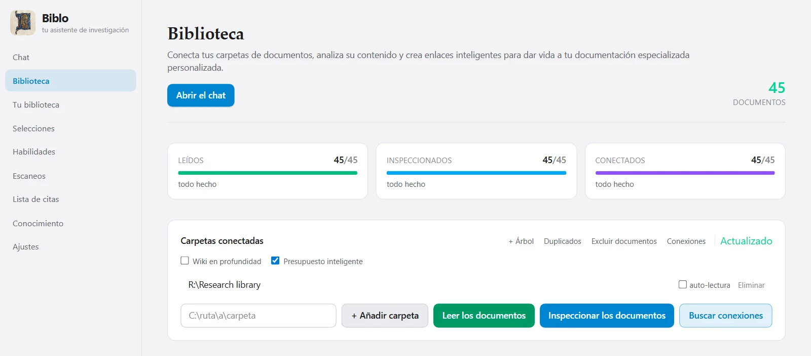
Tus documentos se convierten en volúmenes en un estante, ordenables por fecha, título o autor, con el idioma y la marca de los escaneos. Un clic abre el libro.
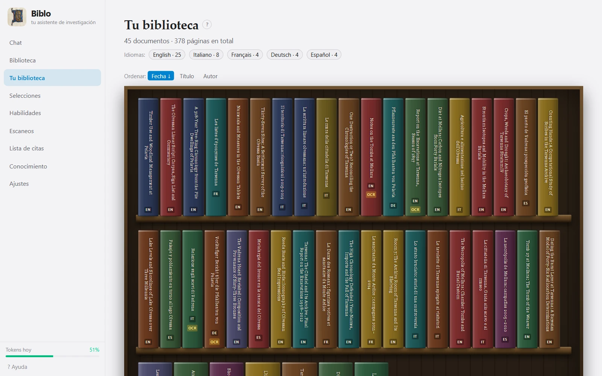
Describe un tema y Biblo te dice qué volúmenes hablan realmente de él, por orden de pertinencia. El resultado se guarda como selección y se convierte en el perímetro de la conversación.
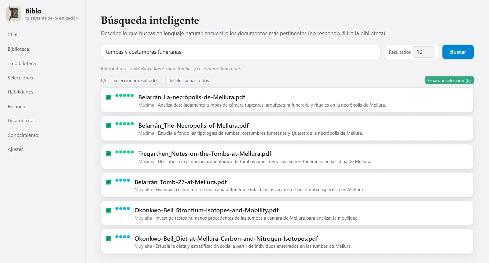
Los libros escaneados y los PDF sin texto se leen con el OCR integrado y se pueden consultar como los demás. El texto reconocido aparece junto a la página, y puedes corregirlo.
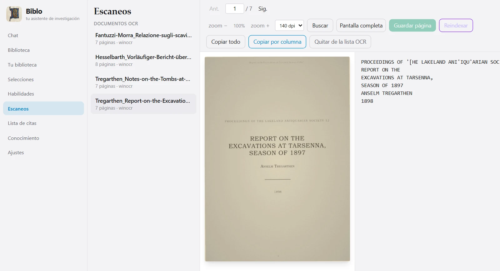
Todo lo que tus textos citan — obras, autores, figuras — reunido en un índice único y consultable, con cuántas veces aparece cada entrada.
Reduce la conversación a un grupo de documentos: fuera de esa selección Biblo no mira, ni para buscar ni para citar.
Interfaz en cinco idiomas, tema claro u oscuro y zoom ajustable: todo escala, nada se vuelve ilegible.
Fichas, conexiones y conversaciones son archivos en tu disco, y se exportan cuando quieras.
Cada pantalla es la aplicación real, en el idioma que has elegido arriba. Los documentos, en cambio, son inventados: una biblioteca de demostración creada a propósito.
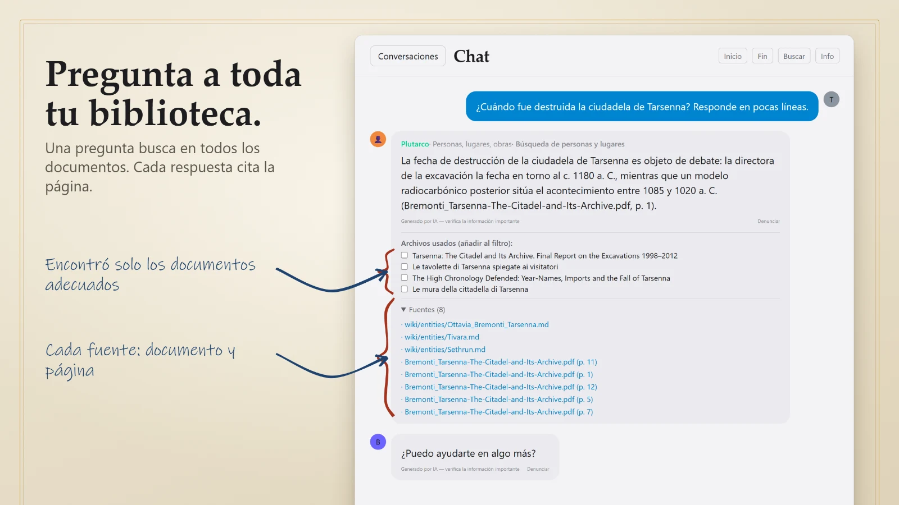
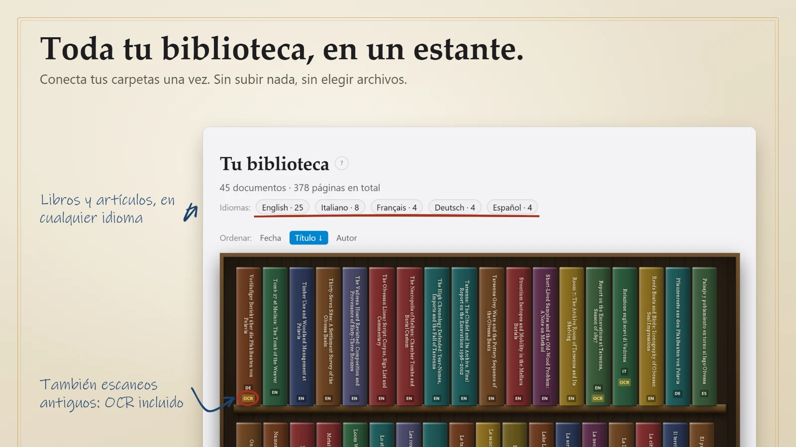
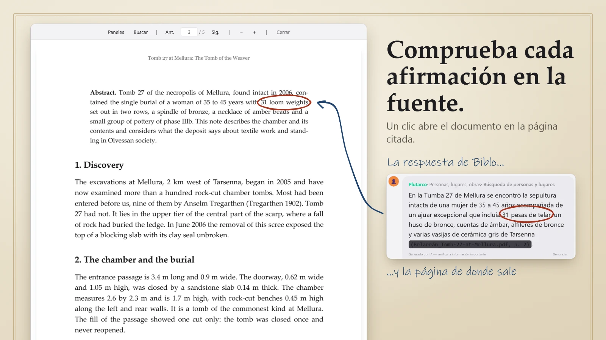
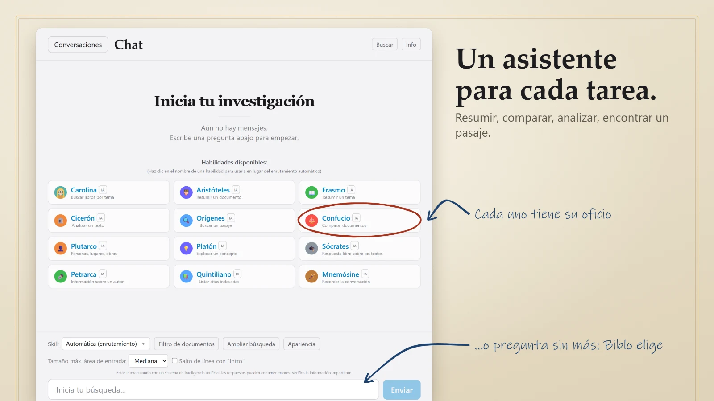
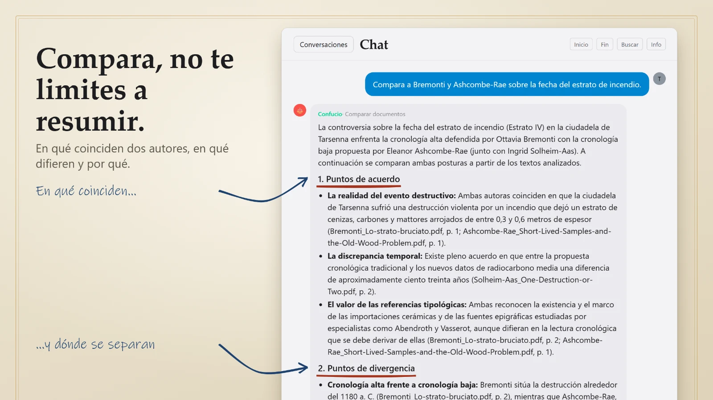
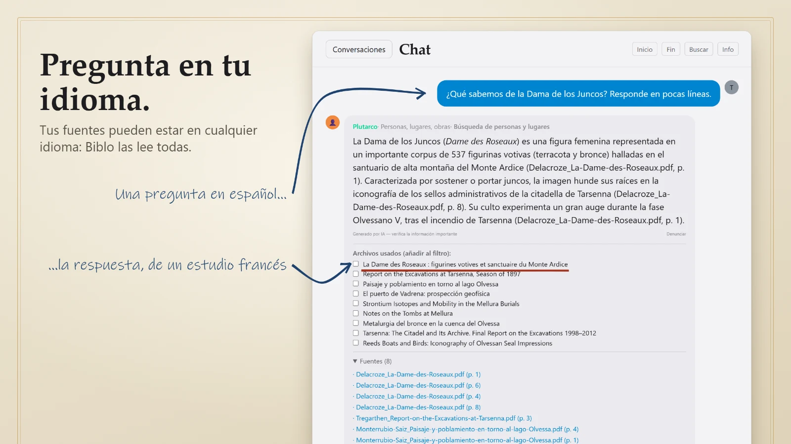
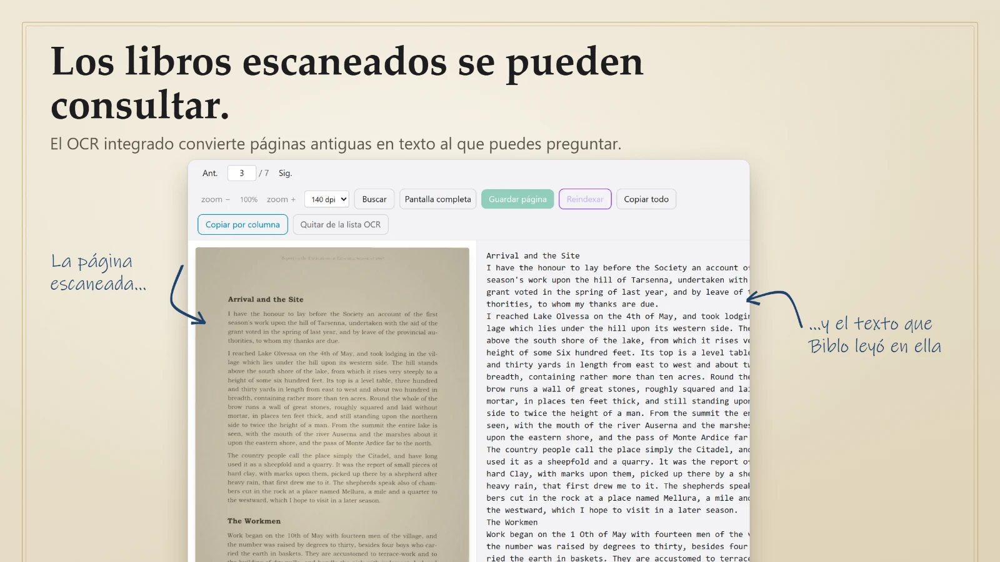
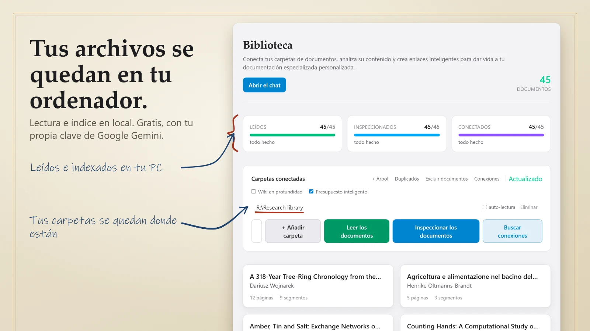
Desplaza hacia el lado para ver el resto →
La lectura, el índice y el almacén de búsquedas son locales: ningún archivo se sube a ninguna parte. Cuando preguntas, al modelo de lenguaje solo viaja el pasaje necesario para responderte, junto con tu pregunta. No pasa por servidores nuestros y no lo conservamos.
Los PDF se quedan en tus carpetas. El índice vive junto a ellos, en tu disco.
Lo que sale es el pasaje que hace falta para esa única respuesta, no la biblioteca.
Biblo usa tu clave del proveedor del modelo: las peticiones pasan por tu cuenta, no por la nuestra.
Nada que configurar a mano. En Windows se instala para tu usuario, sin permisos de administrador; en el Mac abres el archivo descargado y arrastras Biblo a la carpeta Aplicaciones.
El archivo aún no está publicado: el botón lleva a la página de versiones.
(Get-FileHash Biblo_1.2.1_x64-setup.exe -Algorithm SHA256).Hash
6F3076285986F1E544880F6B86373DFE1AE9B4DCEE07A494CAE356D45041A1BF
shasum -a 256 Biblo_1.2.1_aarch64.dmg
c18a576600d92b52de93879b23ddde8c0f648bd6f5c00b40bfb80e95232b6b75
Windows de 64 bits, o un Mac con chip de Apple (M1 o posterior) y macOS 15 Sequoia o posterior. Por ahora no hay versiones para Linux ni para los Mac con procesador Intel.
Unos 2,5 GB: la aplicación, el modelo que convierte el texto en números y el índice de tu biblioteca.
De Google Gemini: se consigue en un minuto en la web de Google. Sin clave la parte de IA no puede funcionar, pero el resto sí: importar, leer y buscar en los documentos son operaciones locales, y la aplicación solo te la pide cuando usas una función de IA (chat, inspección de los documentos, conexiones).
Todo va sobre el procesador. En máquinas modestas la primera lectura es lenta, pero la aplicación deja núcleos libres a propósito para no bloquearte el ordenador.
Para leer y buscar en los documentos no: esa parte es completamente local. Hace falta para el chat y para la inspección, porque la respuesta y las fichas las genera un modelo de lenguaje que está en línea.
La aplicación es gratuita. Para las funciones de IA hace falta una clave del proveedor del modelo, Google Gemini, que tiene un plan gratuito: el consumo del chat pesa sobre ese plan, no sobre nosotros.
PDF, incluidos los escaneados: si un documento no tiene capa de texto, Biblo lo pasa por OCR y luego lo trata como a los demás.
Biblo se desarrolla sobre una biblioteca de 70 volúmenes y más de 11.000 páginas, y funciona con normalidad. El límite práctico no es el número de archivos, sino el tiempo de la primera lectura, que depende de tu procesador.
Solo ocurre con el instalador .exe descargado de este sitio: es el aviso que Windows muestra con cualquier programa no firmado con un certificado comercial. Desde Microsoft Store, Biblo se instala sin avisos, porque el paquete lo firma Microsoft. Si usas el instalador, puedes comparar la huella SHA-256 del archivo descargado con la publicada arriba: si coincide, el archivo es exactamente el que se publicó.
Por nuestra parte no: no recibimos ni conservamos tus archivos. Al generar una respuesta solo se envía al proveedor del modelo el pasaje necesario. En el plan gratuito, sin embargo, Google puede usar esos textos para mejorar sus modelos, y no se puede desactivar. La aplicación te lo explica al introducir la clave.
Sí, y es el funcionamiento normal: la clave la introduces tú y las peticiones pasan por tu cuenta con el proveedor.
No. Los PDF se quedan donde siempre han estado, en tus carpetas. En el Mac, Biblo se quita arrastrándolo a la Papelera; los datos que ha generado (índice, chats, ajustes) se quedan en la carpeta Librería › Application Support › Biblo de tu usuario: bórrala también si ya no la necesitas.